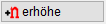
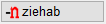
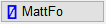

")
Funktionen |
Beschreibung |
|---|---|
Direkteingabe der Anzahl oder des Abstands und des Mattentyps. |
|
 |
Anzahl in einer Position vergrößern. |
 |
Anzahl in einer Position verringern. |
Optionen |
Beschreibung |
|---|---|
 |
Auswahl des zu ändernden Formtyps: RuStFo: Rundstahlform ändern. MattFo: Mattenform ändern. |
So wird's gemacht:
§Stellen Sie sicher, dass im Funktionsbereich der gewünschte Formtyp aktiviert ist.
Änderungen können nur für Rundstahlformen ausgeführt werden. §Wählen Sie, ob eine bestimmte Anzahl hinzugefügt [+n erhöhe] oder abgezogen [-n ziehab] werden soll. §Klicken Sie den Positionstext der Position an, für die eine bestimmte Anzahl hinzugefügt oder abgezogen werden soll. [Welche Pos.]. §Geben Sie den gewünschten Durchmesser ein oder bestätigen Sie den Wert in der Eingabe mit Rechtsklick. Es können nur Durchmesser eingegeben werden, die in der Matten- und Rundstahltabelle enthalten sind. §Geben Sie die Anzahl an. Diese wird zur bisher verlegten Anzahl hinzugefügt oder abgezogen. [Anzahl]. Wenn eine Position mit einem anderen Durchmesser versehen ist, entsteht ein neuer Auszugstext. Falls sich beim Abziehen die Summe 0 ergibt, wird die Position gelöscht. §Geben Sie den Abstand an und bestätigen Sie mit der Eingabetaste. Beachten Sie die eingestellten Eingabeeinheiten. [Abstand (>0)]. Wenn eine Position mit einem anderen Durchmesser versehen ist, entsteht ein neuer Auszugstext. §Geben Sie die Bereichslänge ein. [Verteiler-Länge]. ISBCAD ermittelt die Anzahl und addiert/subtrahiert diese zu/von der Summe am Auszugstext. |
|
Änderungen können nur für Mattenformen ausgeführt werden. §Wählen Sie, ob eine bestimmte Anzahl hinzugefügt [+n erhöhe] oder abgezogen [-n ziehab] werden soll. §Klicken Sie den Positionstext der Position an, für die eine bestimmte Anzahl von Matten hinzugefügt oder abgezogen werden soll. [Welche Pos.]. §Geben Sie den Mattentyp ohne Leerzeichen ein und bestätigen Sie mit der Eingabetaste. [Matten-Typ]. Der Mattentyp muss in der Datei "Matten.DAT" enthalten sein. §Geben Sie die Anzahl ein und bestätigen Sie diese. [Anzahl]. §Geben Sie die Mattenbreite bzw. -länge ein, mit der die Matten versehen sein sollen. [Verlegebreite]. Die Anzahl am Auszug wird korrigiert. Falls beim Hinzufügen bereits eine Anzahl für die Position besteht, wird die Position um den eingegebenen Wert erhöht. |